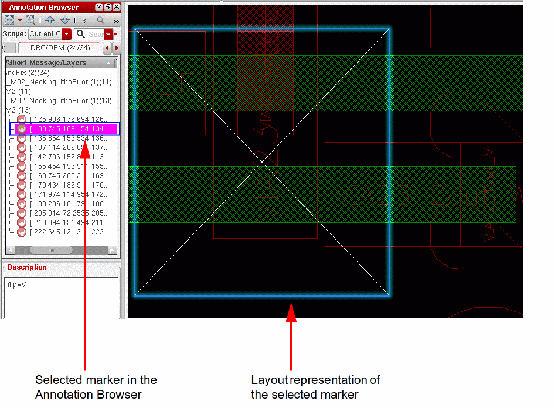
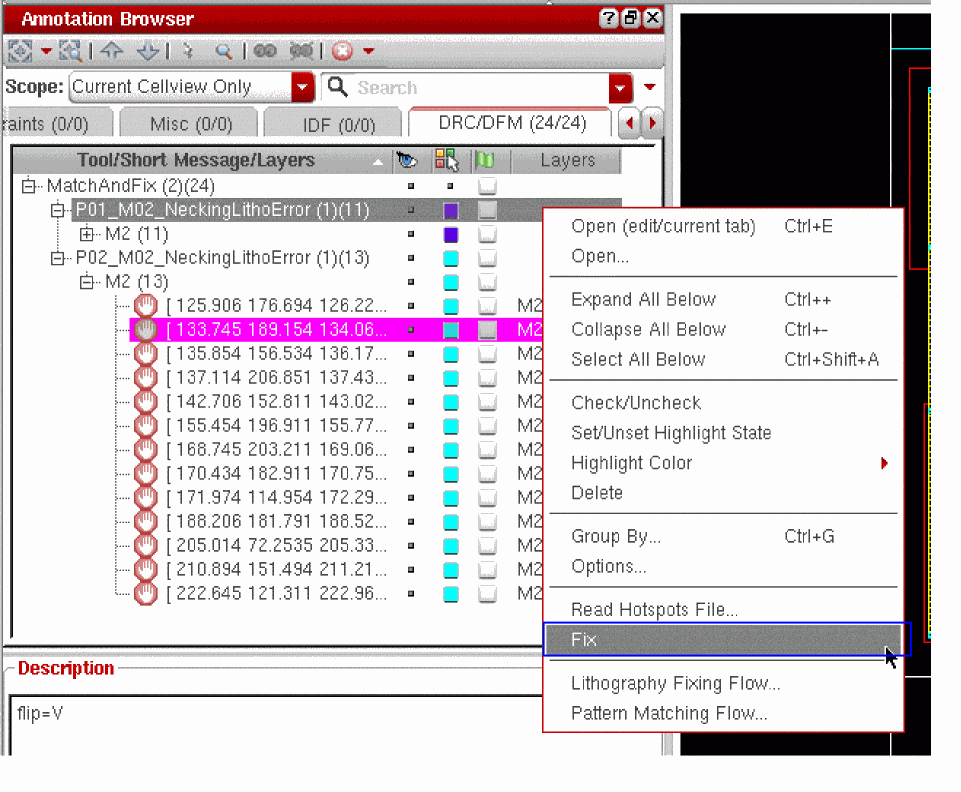

Fixing Markers Interactively in Annotation Browser
You can interactively fix markers that are generated in the DRC/DFM tab and CAS tab of Annotation Browser, by using the appropriate shortcut commands.
Let us see how the markers displayed in the DRC/DFM tab can be fixed interactively.
- In the Annotation Browser assistant, select a marker category or an individual marker that you want to fix.
To select multiple markers or marker categories to be fixed, hold down the Ctrl key while selecting the markers.
-
To zoom into a selected marker to view the violation in the layout, select the marker and click the Zoom To Selected button in the Annotation Browser toolbar.
The layout canvas displays a representation of the selected marker as shown in the figure below.
 -
To fix a marker, right-click the marker in the Annotation Browser and select the Fix command.

Depending on the lithography flow that generates the markers in the DRC/DFM tab, the fixing options in the Annotation Browser are made available from the corresponding fixing form. For example, if the DRC/DFM tab displays markers generated during a pattern matching run, the corresponding fixing options that are made available in the Annotation Browser are based on the Fixing options available in the Match And Fix form.
By default, the selected markers are automatically fixed and removed from the Annotation Browser. However, you can choose to retain the fixed markers in the Annotation Browser by deselecting the Clear Fixed Markers check box on the Fix tab of the corresponding form.
For example, to retain the fixed markers that have been generated during a Match and Fix run, you must deselect the Clear Fixed Markers check box on the Fix tab of the Match and Fix form.
To access the Match And Fix form from the Annotation Browser, right-click a marker and choose Pattern Matching Flow, as shown in the figure below.
To access the Litho Fixing form from the Annotation Browser, right-click a marker and choose Lithography Fixing Flow.
Related Topics
Annotation Browser Shortcut Menus
Annotation Browser Options Form
Grouping Markers in the Annotation Browser
Sorting Markers in the Annotation Browser
Filtering Markers in the Annotation Browser
Return to top